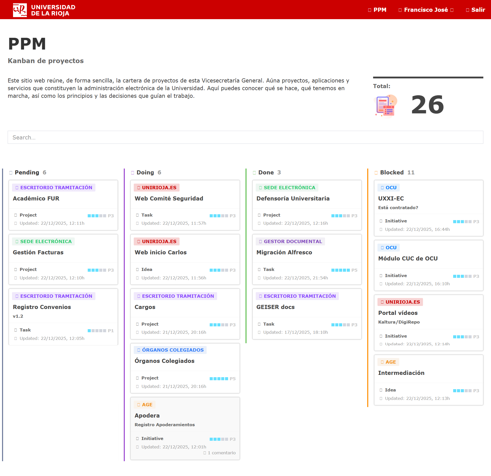
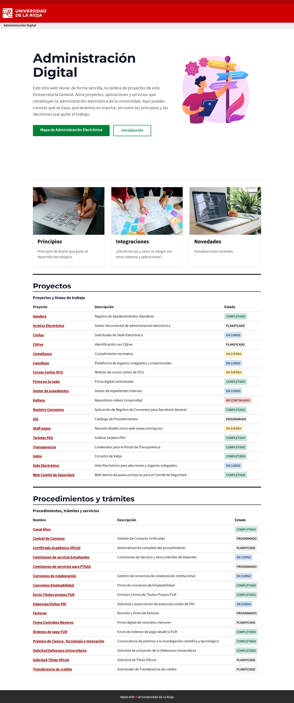

Discovery
A medida que he ido avanzando en los distintos proyectos, me he encontrado con nuevas necesidades y, sobre todo, con problemas que se repiten en contextos diferentes o que pueden resolverse mediante capacidades y servicios comunes.
Inicialmente partimos de unas líneas de trabajo concretas como las siguientes:
- Órganos Colegiados: Consejo de Gobierno, extender a cualquier tipo de órgano colegiado
- Voto Electrónico: sesiones de órganos colegiados y elecciones
- Transformación de diplomas/certificados FUR en papel a digital
- Registro de Convenios
- Firma de convenios de empleabilidad
- Órdenes de pago FUR a personal UR en nómina
- Circuitos de Valija: FUR, contratos menores, facturas.
- IDP (Intelligent Document Processing) con inteligencia artificial en preinscripción.
- Firma de comisiones de servicios, empezando por estudiantes para extender quizás a PTGAS y PDI.
Para dar respuesta a las necesidades, en vez de desarrollar cada una de forma aislada, la visión es construir aplicaciones y servicios más generales y reutilizables, pero siempre de forma incremental: no construir catedrales que tardan años en terminarse, sino pequeñas iglesias que puedan ser útiles desde el primer día.
Algunas de las piezas todavía están en desarrollo y parecen proyectos independientes, pero la idea es precisamente esa: ir construyendo piezas que después puedan encajar entre sí.
Este enfoque encaja, de una forma u otra, con aproximaciones presentes en distintas metodologías como Double Diamond, Platform Thinking o Arquitectura Evolutiva, por nombrar algunas. Pero, más allá de la metodología concreta, la idea de fondo es sencilla:
Usar la tecnología como palanca para crear servicios útiles, centrados en las personas y alineados con la estrategia de la Universidad.
Y para trasladar la información de la evolución y avances, se plantea este sitio web que pretende ser una combinación de cartera de proyectos, descripción de alto nivel de la tecnología, inventario de aplicaciones y servicios junto con blog de novedades. Anteriormente, desde el servicio de Administración Electrónica se radiaba la información de los proyectos en forma de Kanban:

Sin embargo, como no todo en la vida es Kanban, esta forma está pensada para tener una panorámica de los proyectos que se vaya actualizando con los avances:
